No estimate of a solar plant's capacity lowered day-ahead forecast error detectably at 6 plants, and a daily Kalman filter raised it
Bottom line. We tested replacing the one fixed number that a solar forecast divides each plant's power by (the plant's static capacity, its 99th-percentile output) with a capacity estimate, an estimate updated every day of how much power the plant can produce. At 6 solar plants over 18 months, no capacity estimate lowered the day-ahead error detectably, and the Kalman filter that the study plan's rule selected raised it by 0.255 points of capacity (percentage points of the static capacity) [+0.004, +0.563], against a baseline error of 8.93 points, at the primary XGBoost setting, and not detectably at the second setting. For Flexpectation (this project), the plan's rule therefore says that a capacity estimator is not worth building for the day-ahead forecast, but the record cannot tell whether a better estimator would lower the error, because only 3 of 106 plant-months are the low-output kind of loss that an estimator exists to repair (one plant producing about 70% of its neighbours' output for a month). The next step this study suggests is to test a hold-at-static detector (HYST, designed after the results) on more plants.
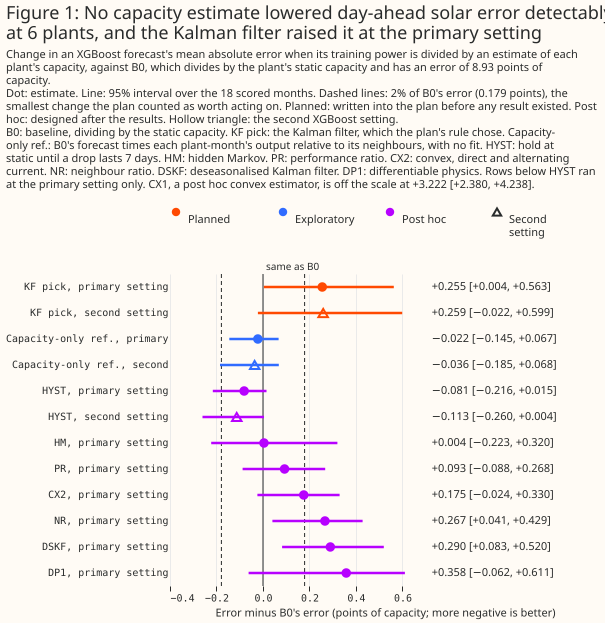
How the study works. Stage A plants known losses (steps, ramps, and intermittent losses of 5% to 40% of power) in real power and asks each estimator to find them, which is the recovery test, with no forecast in the loop. False movement is the share of days on which an estimator's capacity moves more than 5% in plant-months in which nothing should have changed. Stage B divides the lag-features study's baseline forecast, B0, by the estimator that the plan's fixed rule selects, and compares forecast errors. The rule requires a candidate to pass a false-movement gate, and when no candidate does, it picks the best recoverer and calls the pick an ungated pick.
Is a capacity estimator worth implementing for the day-ahead forecast? Not worth building by the plan's rule, and not shown either way for a better estimator. The selected Kalman filter changed the error by +0.255 points [+0.004, +0.563] at the primary setting and +0.259 points [−0.022, +0.599] at the second, so both intervals exclude a gain of the plan's 0.179-point threshold. The Kalman filter's setting is the most agile one tried (its process standard deviation 0.08 sat at the edge of the tuning grid, and a stiffer filter never reached Stage B). The Kalman filter would beat B0 overall only above 6.5% of rows, and would reach the threshold only at about 9.7%, if the 5.180-point gain from one plant carried over (Figure 7).
Which techniques look most promising? For forecast error, HYST had the lowest point estimate of the 8 post hoc arms, −0.081 points [−0.216, +0.015] at the primary setting and −0.113 points [−0.260, +0.004] at the second, and HM (+0.004 [−0.223, +0.320]), PR (+0.093 [−0.088, +0.268]), and CX2 (+0.175 [−0.024, +0.330]) were also indistinguishable from B0 (Figure 1). For recovering a planted loss, the Kalman filter had the smallest error (1.86 points against 5.02 for doing nothing), then CX1, CX2, PR, and NR (2.04 to 2.39). DP1, the most explainable of the 11 estimators graded, recovered 4.03 points (Figure 3, Figure 10).
A possible reason that the best recoverer raised forecast error, not isolated: the Kalman filter's raw level has a seasonal shape, 0.72 to 0.88 of each plant's median in December, which the recovery test cancels (Figure 5). It raised error by +0.841 points [+0.032, +1.604] from December to February and lowered it by 5.180 points in the 3 low plant-months (Figure 6). The explanation is untested: DSKF removes the shape and still raised error by +0.290 points, and dropping the day-of-year column from B0 lowered its error by 0.117 points, more than HYST's gain.
Did any estimator stay still when nothing changed? Only HYST (2.6% of days) and the two references (S0 and EM, which cannot follow a loss). The 9 candidates moved on 31.5% to 80.5% of days against the plan's 10% gate, and none passes even a 30% gate, so the ungated pick is not fragile (Figure 4).
Can the study detect a loss at all? Yes. When a 30% step was planted in 17 plant-months, the oracle (told the true loss) lowered the error by 1.467 points [−2.084, −0.854], and the Kalman filter recovered 0.89 of that gain (Figure 8).
What can these data support? These data support the absence of a forecast gain from the daily Kalman filter at these 6 plants, and a hypothesis that holding the static capacity until a drop lasts does no harm. The data do not support a claim about wind, domestic solar, more than 18 months, hundreds of plants, or a plant that loses capacity in a way that its neighbours do not share.
Terms used on this page.
- Points: percentage points of a plant's static capacity. A difference is an arm's error minus the baseline's, so negative means a lower error. In the recovery test, a gap of 0.02 in the share of power left is 2 points.
- Arm: one XGBoost model configuration with its own estimator. The baseline arm, B0, divides by the static capacity (lag-features study). Every other arm trains on power divided by an estimator's capacity, multiplies its forecast back, and is scored in megawatts against the static capacity.
- Hyperparameter setting: a choice of XGBoost depth, learning rate, and number of rounds. The primary setting and the second, shallower setting with more rounds come from the lag-features study, and a result that holds at both belongs to the inputs and not to the setting.
- Planted loss: a synthetic loss, multiplied into real power in a month chosen at random.
- Planned, exploratory, post hoc: a planned contrast was written into the study plan before any result existed. Every other number is exploratory. A post hoc number was designed after the first results were seen and is therefore a hypothesis.
- Interval: the range of changes in error that the data are consistent with, allowing for month-to-month weather. A 95% interval is a t-interval over the 18 scored months unless its subtitle says that it resamples whole months.
- Oracle: an arm told the true size of a planted loss.
- Low-output plant-months: the 3 plant-months in which one plant produced between 0.67 and 0.71 of its neighbours' output, below a neighbour ratio of 0.8. The count of 3 rests on that threshold.
How this page was made. The research question came from a human. Everything else — the code behind every result, the analysis, the figures, and the text — was written by Claude, Anthropic's AI model (for this page, Claude Sonnet 5.5 for the code, the analysis, the figures, the text, and the code reviews, and Claude Opus 5.5 for the plan and its two reviews). Several independent Claude reviewers have checked the method, the evidence, and the prose adversarially.
Key findings
- The convex estimators did not beat the Kalman filter at recovery. CX1 recovered a planted loss 0.177 points worse than the Kalman filter [0.092, 0.262] (planned contrast E1) and raised forecast error by 3.222 points [+2.380, +4.238] (post hoc), and DP1 recovered a loss 1.992 points worse than CX1 [1.745, 2.240] (planned contrast E2) (Figure 3).
- HYST detects most planted steps, slowly. HYST detected 37 of 53 planted steps with a mean delay of 8.4 days, and missed 7 of the 44 steps that fell where its seasonal profile exists (Figure 2).
- The hindsight estimate did not beat the causal one. The hindsight Kalman filter's error was 0.423 points above the causal filter's [−0.048, +1.086], and 0.030 points above without two plant-months (Figure 11).
- DP1 is the candidate to build on if version 2 of Flexpectation is a differentiable-physics model. DP1 scored highest for explainability and is the only estimator graded yes for differentiability, and it trails on recovery (Figure 10, Groundwork for version 2).
Introduction
Flexpectation needs to know whether dividing a plant's power by an estimate of its available capacity improves the plant's forecast. Every solar forecast in this repository divides power by one fixed number per plant. A plant that loses a string, an inverter, or part of its output to curtailment is, for forecasting, a different plant, and the baseline cannot see the difference. The lag-features study found one plant producing two thirds to three quarters of its neighbours' output in 3 of 18 months. The baseline XGBoost model, given the day of the year, learned those months and then under-forecast a normal March by 14.6 points (lag-features study). The question came from issue #1143 (Is a time-varying effective capacity worth estimating for solar forecasts?), and the roadmap names this head-to-head as its decision.
The project's energy-forecasting review names the published methods, and most estimators here follow one of them. CX1 and CX2 are linear-programme counterparts of the quadratic optimisation of Viotti et al. (2026), who fit a capacity time series against a capacity factor simulated from weather and a power curve. DP1 follows the differentiable-physics route of Pierrot and Pinson (2024), who fit capacity as a bound with uncertainty, and of Gijón et al. (2025), who fit a physical model to metered power. KF is a sequential Bayesian update, as the honourable-mention team used in Authen et al. (2026). PR divides power by modelled output driven by satellite irradiance, as RdTools does. CSQ takes a quantile of output over clear-sky output (the output under a cloudless sky), the idea behind Meyers et al. (2020). EM is the running maximum that Dantas and Browell (2026) use and that Viotti et al. quote their figures against. The review found no published precedent for NR or HM, and DSKF and HYST were designed after the main results.
Three published methods are not tested. The Solar Data Tools pipeline and StatisticalClearSky would add dependencies to the repository's lock file. Joint estimation with the forecast (Pierrot and Pinson) needs a different forecaster from the lag-features study's. Per-park power curves (Authen et al.) are for wind.
| Code | Family | What the estimator does |
|---|---|---|
| S0 | reference | reports the static capacity every day, so it never moves |
| EM | reference | the running maximum of the power readable at issue time, so it cannot fall |
| R30 | simple formula | the 30-day 99th percentile of power |
| CSQ | simple formula | the 30-day 90th percentile of power over the physics model's clear-sky output |
| NR | simple formula | the plant's 7-day output over the other plants', times the static capacity |
| PR | simple formula | the 7-day ratio of power to physics-model output driven by satellite irradiance, over its value in a calibration year |
| KF | simple formula | a Kalman filter on the daily log ratio of power to physics-model output driven by satellite irradiance |
| HM | hidden Markov | a hidden Markov model (a model that switches between a few discrete states) over four discrete capacity levels: 1, 0.9, 0.75, and 0.5 of the static capacity |
| CX1 | convex programme | a fused-lasso fit (a fit that penalises day-to-day changes) of one daily capacity trace |
| CX2 | convex programme | separate direct-current and alternating-current traces, a clipping classifier, and a hinge for curtailment |
| DP1 | differentiable physics | a PyTorch model with a piecewise-constant weekly direct-current capacity and a posterior |
| DSKF | post hoc | KF divided by a cross-plant day-of-year profile built only from earlier calendar years |
| HYST | post hoc | holds the static capacity until a drop in DSKF of more than 10% lasts 7 days, follows it, and releases after 7 recovered days |
Data and methods
The rows and the forecaster are the lag-features study's. The study scores 29,445 lead-day-1 daylight hours at 6 plants over 18 months, which is 106 plant-months. The forecaster is the lag study's baseline B0: seven columns (hour of day, day of year, an era code, the sun's elevation and azimuth, and the ensemble mean's irradiance from the European Centre for Medium-Range Weather Forecasts (ECMWF) and temperature), the absolute-error objective, three fitting seeds, and five folds of whole months. The lag-features study describes the rows, the folds, and both hyperparameter settings. Every arm has the same seven columns. Before any other fit, the script checks that dividing B0's inputs by one constant reproduces B0, and that a refit of B0 reproduces the lag study's B0 losses bit for bit. Each check raises on a mismatch.
Every estimate is causal. The capacity used for a forecast for day T reads whole days up to day T−2, which is what a forecast issued at 09:00 UTC on day T−1 can read. An estimator falls back to the static capacity with fewer than 30 valid days of history, a day being valid when its observed hours hold at least 50% of its clear-sky energy, and the capacity is floored at 20% of the static capacity. Each training row is divided by the estimate for its own target day. That estimate may read the power of an earlier held-out month, which does not leak the held-out answer, because each training row predicts only its own power.
Every arm is scored in megawatts against the fixed static capacity. An arm divides power by the estimator's capacity, trains, multiplies its forecast back, and is scored as error over the static capacity, so that an estimator cannot lower its error by inflating its capacity on its worst days. The report prints errors as shares of capacity, and this page quotes them as points, which are 100 times larger.
Stage A asks "which technique?" with no forecast in the loop. One tuning draw and 10 selection draws each plant 16 or 17 losses in the real power: a step, a ramp, and an intermittent loss at each plant, except that one plant has room for fewer. Each loss has a size drawn uniformly from 5% to 40% and lasts one month, and losses keep 30 days before and 60 days after clear of each other (180 losses over 11 draws). A step multiplies the month's power by one minus the size. A ramp moves the multiplier linearly across the month. An intermittent loss applies the multiplier on 49% of the month's days on average.
Stage A scores each estimator by the capacity it reports with a loss against the capacity it reports without. The primary metric is the mean, over the days of the planted month and the 60 days after it, of the gap between that ratio and the share of power left. The ratio cancels whatever real changes the real power holds, and it cancels any seasonal shape that the estimator has. A second metric, false movement, is the share of days on which an estimator's capacity on real power moved more than 5% from its median over the previous 90 days, in 23 plant-months whose output was between 0.95 and 1.05 of the neighbouring plants'. A fallback to the static capacity counts as a move. The windows are chosen with NR's own statistic, so the check favours NR.
The plan's selection rule is fixed. A candidate survives only if it beats S0's recovery error, moves on at most 10% of days, and falls back to the static capacity on at most 25% of its event days. The survivor with the lowest recovery error goes to Stage B. If none survives, the rule picks the estimator with the lowest recovery error among those that beat S0 and pass the fallback gate, and labels the pick an ungated pick. Two planned estimator-level contrasts, E1 (the best convex estimator minus the best of the simple formulas and the hidden Markov model) and E2 (DP1 minus the best convex estimator), use a 97.5% t-interval over the 10 selection draws.
Each estimator's settings were chosen on the tuning draw only. The tuning grids of KF, HM, CX1, and CX2 were widened after a first pass, because the winners sat at a grid edge. DP1's grid gained a data weight and the total-variation weights 0.5, 1, and 2 (a total-variation penalty discourages jumps in the weekly capacity) after a first pass left DP1 worse than doing nothing. Both changes used the tuning draw only. After the widening, KF's process standard deviation (0.08), HM's stay probability (0.8), and the fused weight of CX1 and CX2 (0.3) still sat at the edge of their grids, so the Kalman filter verdict is for the most agile setting tried, and a stiffer filter (process standard deviation 0.02) never reached Stage B. DP1's estimator uses windows with at least 20 valid days, and the other estimators fall back below 30.
Stage B asks "is it worth it?" with one planned contrast. P1 (planned) is the selected arm minus B0, pooled over the 6 plants, at both XGBoost settings. The plan's rule uses a threshold of 2% of B0's error (0.179 points). The rule calls the estimator worth building if the interval lies wholly below zero at both settings and the point estimate is at or below the negative threshold, and not worth building if, at both settings, the interval lies wholly above the negative threshold. Every other outcome is unresolved, and so is any outcome in which the negative control's interval lies wholly below zero.
Two controls test whether the instrument works. The negative control, NC2, gives each plant's scale the wrong months. The positive control plants a 30% step in the power that the forecasts train on and are scored against, in up to 3 months at every plant, and compares B0, an oracle, and the selected estimator. A capacity-only reference multiplies B0's forecast by each plant-month's output relative to its neighbours.
What the significance test covers. An interval is a t-interval over the 18 scored months, with every month counting once. The test covers month-to-month weather and not differences between plants, so these 6 plants pooled are the unit. The report also prints a bootstrap interval that resamples whole months and a fitting seed, and a figure's subtitle says where the figure draws it. An exploratory or post hoc row with no real effect has a nominal 5% chance of reaching statistical significance at the 5% level. The number of such rows is unknown, shared months make the false results cluster, and the page does not correct for multiple comparisons.
Post hoc estimators and arms. DSKF and HYST were designed after the main results, to test the explanation in "The Kalman filter's raw capacity level is lowest in December at every plant", and HYST's trigger and release settings were not tuned. The Stage B arms for the other estimators were fitted after the selection, at the primary setting only. None of these arms changes the plan's selection or verdict.
Results
On one planted 29% step, most estimators followed the loss within days, and S0 and EM never did
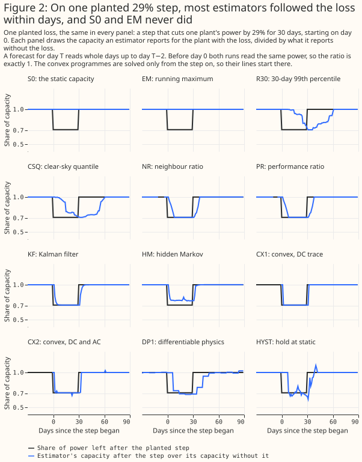
Of the 12 estimators drawn, 8 followed the planted step within about 10 days, R30 and CSQ lagged by weeks, and S0 and EM could not follow it. The event is the selection draws' step closest to 30%, among steps in a part of the record where HYST has a seasonal profile. Over all planted steps, KF, CX1, and CX2 detected a step after about 3 days, NR and PR after 5 days, HM after 3.9 days, HYST after 8.4 days, DP1 after 9.7 days, CSQ after 18.2 days, and R30 after 20.7 days (Figure 3). HM jumps between its four levels and settles near the planted share and not at it.
HYST holds the static capacity until a drop has lasted 7 days, follows it, and releases after 7 recovered days. HYST detected 37 of the 53 planted steps in the selection draws (0.70) and missed 16. Of the 16, 9 fell where DSKF has no seasonal profile (29 of the 163 events), because the profile is built only from earlier calendar years. The 7 steps that HYST missed although a profile existed were 5%, 7%, 8%, 9%, 11%, 13%, and 25%. KF detected all 53 steps, and DSKF 44.
Most estimators recovered a planted loss better than doing nothing, and the Kalman filter did so best
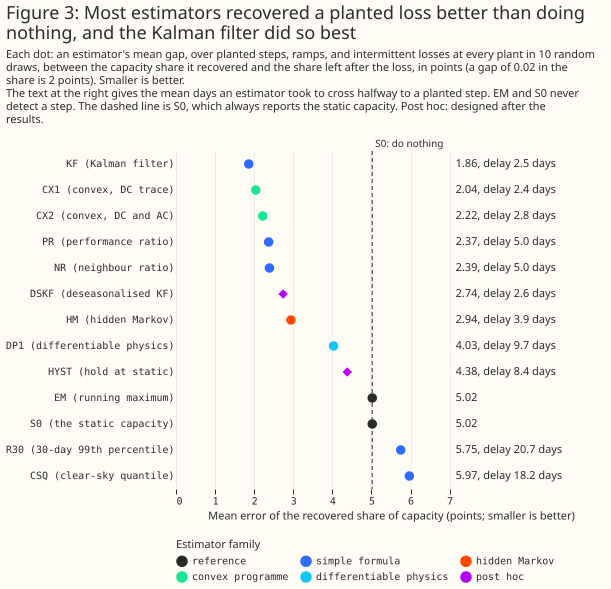
Of the 13 estimators, 9 recovered the planted losses with less error than S0's 5.02 points, and the Kalman filter's error, 1.86 points, was the smallest. CX1 (2.04), CX2 (2.22), PR (2.37), NR (2.39), DSKF (2.74), HM (2.94), DP1 (4.03), and HYST (4.38) followed. R30 (5.75) and CSQ (5.97) did worse than doing nothing, and EM matched S0 because it cannot fall. The Kalman filter's 90% interval covered the planted factor on 0.93 to 0.98 of days, and DP1's on 0.81 to 0.82.
The planned contrasts do not support the roadmap's prediction that a convex estimator wins. CX1 recovered a planted loss 0.177 points worse than KF [0.092, 0.262] (E1), and DP1 recovered 1.992 points worse than CX1 [1.745, 2.240] (E2). Each is a 97.5% t-interval over the 10 selection draws, conditional on these 6 plants and this record, and each reads "loses". DP1's recovery error was lower than doing nothing's, after its grid was widened, but DP1 trails the convex and filter estimators: its 90% interval covered the planted factor on 0.81 of days, and DP1 took 9.7 days to detect a step. Reading the satellite irradiance one day older raised the recovery error of KF from 1.86 to 2.24 points, of CX2 from 2.22 to 2.56, and of PR from 2.37 to 2.73.
On plant-months whose output matched the neighbouring plants', only HYST and the references stayed still
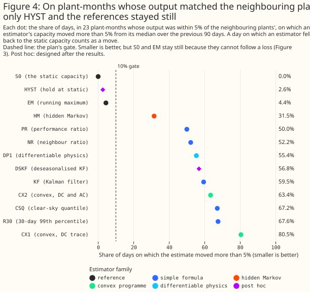
All 9 candidates moved on 31.5% to 80.5% of days where the neighbouring plants gave no reason to move, so none passed the 10% gate. HM moved least (31.5%), then PR (50.0%), NR (52.2%), DP1 (55.4%), KF (59.5%), CX2 (63.4%), CSQ (67.2%), R30 (67.6%), and CX1 (80.5%). S0 (0.0%) and EM (4.4%) stayed still because they cannot follow a loss, and HYST (2.6%) stayed still while detecting steps. The windows favour NR, and NR still moved on 52.2% of days.
The Kalman filter's raw capacity level is lowest in December at every plant
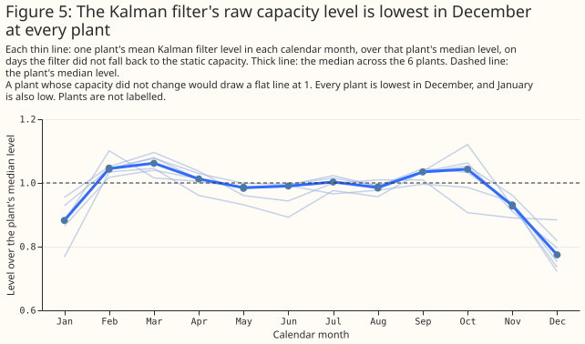
The Kalman filter's level falls to between 0.72 and 0.88 of each plant's median in December, with a median of 0.77 across plants. January is the next lowest month (median 0.88, with one plant at 0.77). The shape appears at all 6 plants, so the shape does not come from the capacity of any one plant. The filter divides power by the output of a physics model driven by satellite irradiance, and the study did not isolate which part of that ratio carries the shape.
A possible reason, not isolated: the planted-loss ratio cancels the shape, so Stage A's tuning rewarded agility. The capacity reported with a loss and the capacity reported without it carry the same seasonal factor, so a filter that chased winter was not penalised for chasing it. The false-movement check and the forecast contrast can see the shape, and the tuned filter sat at the agile edge of its grid. The explanation is untested. DSKF removes the shape with a profile from earlier years, and still moved on 56.8% of days and raised forecast error by +0.290 points [+0.083, +0.520]. Dropping the day-of-year column lowered B0's error by 0.117 points, more than HYST's 0.081, and the Kalman filter without that column was 0.326 points above B0 without it, so the day-of-year column also carries part of any seasonal story.
The Kalman filter raised error in December to February, and HYST did not
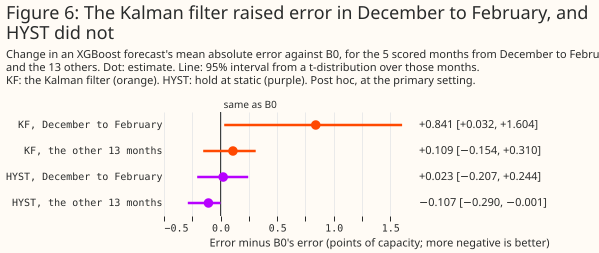
The Kalman filter raised the error by +0.841 points [+0.032, +1.604] in the 5 scored months from December to February, and by +0.109 points [−0.154, +0.310] in the other 13 months (post hoc). The bootstrap interval for December to February is [+0.350, +1.335]. HYST changed the error by +0.023 points [−0.207, +0.244] in winter, and by −0.107 points [−0.290, −0.001] in the other months.
The Kalman filter cut error by about 5 points in 3 low plant-months and added 0.4 points elsewhere
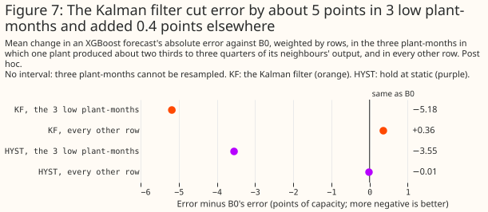
In the 3 low plant-months the Kalman filter lowered the error by 5.180 points, and on every other row it raised the error by 0.361 points (post hoc, weighted by rows). HYST lowered the error by 3.550 points in the 3 low plant-months and changed it by −0.014 points elsewhere. The Kalman filter would beat B0 overall only if more than 6.5% of rows were low-output plant-months, and would reach the plan's threshold only at about 9.7%, if the 5.180 points carried over from one plant, against 1.9% of rows here (2.8% of plant-months). One plant supplies all 3 low plant-months, so the study cannot resample them, and 5.180 points is a description and not an estimate with an interval. In the 3 low months the Kalman filter's mean scale was 0.65, 0.71, and 0.88 of its level in other months, against the neighbours' ratios of 0.68, 0.67, and 0.71.
Two claims need separating. First, a gain of 0.179 points or more is excluded for the selected Kalman filter at both settings, because both t-intervals lie above −0.179. Second, the record cannot tell whether a better estimator would lower the error. The capacity-only reference, which multiplies B0's forecast by each plant-month's output relative to its neighbours, changed the error by −0.022 points [−0.145, +0.067] at the primary setting and by −0.036 points [−0.185, +0.068] at the second, and HYST's −0.081 beat it, so the reference is a yardstick and not a bound.
When 30% steps were planted in 17 plant-months, the Kalman filter recovered most of the oracle's gain
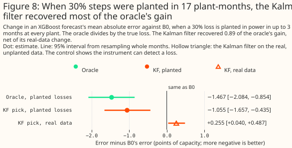
The instrument can detect a loss: on the planted data the oracle lowered the error by 1.467 points [−2.084, −0.854], and the Kalman filter by 1.055 points [−1.657, −0.435] (bootstrap intervals). The Kalman filter's recovery share, its planted-data gain minus its real-data change over the oracle's gain, was 0.893. The control is far stronger than the real record, with 17 planted plant-months against 3 real ones, so passing it shows that the instrument works and not that P1 has power. The negative control, NC2, raised the error by 2.089 points [+1.482, +2.671], so the pipeline reacts to a scale that is wrong.
HYST left the static capacity on 13% of plant-days, and on none in 3 of the 18 months
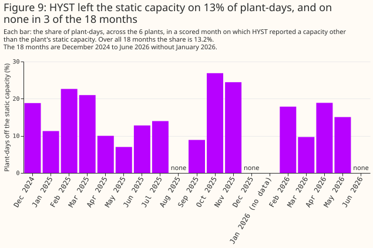
HYST left the static capacity on 13.2% of plant-days, and its mean capacity was 0.982 of the static capacity (post hoc). HYST's monthly share ranged from 0.0% to 26.9%. The CRPS (continuous ranked probability score, an error score for a whole forecast distribution) of its quantile forecast was 6.051 points against 6.147 for B0, whereas the Kalman filter's was 6.305. Over the first 9 scored months HYST changed the error by −0.045 points [−0.218, +0.143], and over the last 9 months by −0.130 points [−0.335, +0.010].
DP1 and KF score highest for explainability, and the running maximum and the quantile formulas lowest
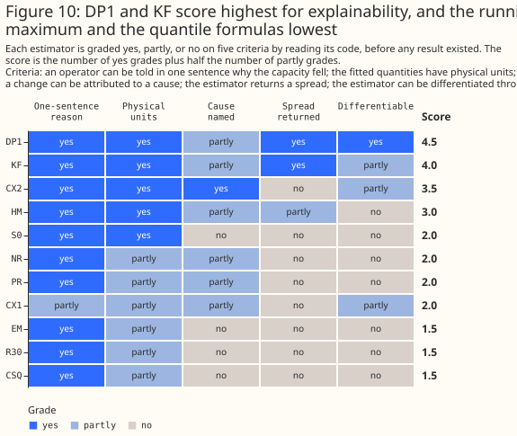
DP1 scored 4.5 of 5, KF 4.0, CX2 3.5, and HM 3.0, and EM, R30, and CSQ scored 1.5. "Explainability" gives the criteria and the reasons. In the 17 planted events of the tuning draw, the planted change 20 days in had a median of −0.1812 of capacity. KF's median estimated change was −0.1859 (lowest −0.3882, highest −0.0663), HM's −0.1868, CX2's −0.2121, DP1's −0.1544, and S0's 0.0000.
The hindsight Kalman filter did not beat the causal one, and the gap shrank from 0.42 to 0.03 points without two plant-months
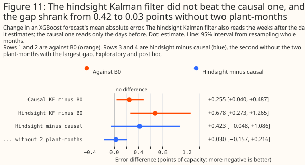
The hindsight Kalman filter, which also reads the weeks after the day it estimates, raised the error by 0.678 points [+0.273, +1.265] against B0, and by 0.423 points [−0.048, +1.086] against the causal filter (exploratory and post hoc, bootstrap intervals). Without the two plant-months where hindsight did worst (29.0 and 15.3 points worse than the causal filter), the gap was 0.030 points [−0.157, +0.216]. In the earlier months of those plants the hindsight scale was lower than the causal scale, so the training rows there were divided by a smaller number and carried larger targets. The day-of-year column is consistent with the trees carrying those larger targets into the same calendar months a year later.
Discussion
What to use
For the day-ahead solar forecast at these 6 plants, keep dividing by the static capacity. No estimator lowered the forecast error by a statistically significant amount at both settings, and the plan's rule calls a daily capacity estimate not worth building for forecast skill. The result would change with more low-output plant-months, more plants, or a longer record.
If a capacity estimate is wanted for another use, check false movement on normal months before tuning for recovery. The estimator that recovered a planted loss best raised error most, because recovery scoring cancels the seasonal shape that the forecast contrast and the false-movement check can see. Whether a time-varying capacity table is worth building as a fault signal rests on Stage A, and the forecast contrast does not decide it.
HYST is the estimator this study suggests testing next, as a hypothesis and not a recommendation. HYST had the lowest point estimate of the 8 post hoc arms (HM, PR, and CX2 were also indistinguishable from B0), it lowered the error in the 3 low plant-months by 3.550 points, and it moved on 2.6% of days. HYST was designed after the results, so its small gain carries a winner's curse (the best of several options tried looks better than it is). HYST's favourable looks were all chosen after seeing the results: the second setting, the CRPS, the December-to-February split, the low-month split, and the first-9 and last-9-month split. HYST misses small losses, cannot act until a seasonal profile exists, and had a CRPS of 6.051 points against 6.147 for B0. A fair test would fix HYST's settings first and use more plants.
Explainability
The study graded each estimator on five yes, partly, or no criteria from its code, before the estimates existed, because the capacity estimator has to be explainable. The criteria are that an operator can be told in one sentence why the capacity fell on a given day, that the fitted quantities are physical quantities with units, that a change can be attributed to a cause (soiling, a lost string, curtailment, or bias), that the estimator returns a spread, and that the estimator can be differentiated through for joint fitting. A yes scores 1 and a partly 0.5, and the rubric took no part in the selection rule.
- DP1 (4.5): its tilt, azimuth, and both capacities are physical, and it returns a posterior. The loss handles curtailment without naming it. The fitted tilts run from 13.1° to 26.7° and the azimuths from 161.0° to 179.6°, across the plants, taken from one orientation fit.
- KF (4.0): an availability factor with a standard deviation. A random walk cannot separate causes.
- CX2 (3.5): separate direct-current and alternating-current traces tell a lost string from a lost inverter, and the hinge handles curtailment.
- HM (3.0): capacity is a share of whole units, so a fall reads as units lost.
- NR, PR, CX1, and S0 (2.0), and EM, R30, and CSQ (1.5): these seven estimators report a level and give no cause.
HYST and DSKF were designed after the rubric and are not graded. HYST can say that a drop has lasted 7 days, and cannot name a cause.
Groundwork for version 2
DP1 is the estimator to build on if version 2 of Flexpectation becomes a differentiable-physics model, and several of its parts do not yet connect. DP1's inputs are satellite-driven global horizontal irradiance for each hour, the plant's coordinates, and a window of measured power. DP1's tilt, azimuth, and alternating-current limit come from a separate orientation fit and are not learned jointly. Its output is a weekly direct-current capacity trace with a normal posterior, a mean and a standard deviation per week, which a larger differentiable-physics model could take as input.
The physics chain from irradiance to power, the soft clip, the pinball (quantile) reconstruction
loss, the Kullback-Leibler term (which keeps the posterior near its prior), and the total-variation
penalty are differentiable in PyTorch now. The Erbs split of irradiance (a formula that separates
global irradiance into beam and diffuse parts) and the solar position come from pvlib in NumPy, so
gradients stop at the irradiance. The orientation fit is a separate SciPy fit. The refit schedule is
a loop of independent weekly windows and not one joint fit, so DP1's estimate can be up to 7 days
stale.
Joint fitting needs three changes. The physics inputs have to become tensors, which means porting the Erbs split and the plane-of-array chain. One objective has to cover the whole record. A prior has to tie the weekly capacity across plants in the same weather.
How the findings would inform a similar study for wind power
The lessons of this study suggest what a wind study could check first, and each suggestion beyond the sourced points is speculation. Viotti et al. (2026) find that the variant that recovers wind capacity best is not the variant that forecasts best, and this study found the same split for solar. They also report a day-ahead error 2.0% below that of a running-maximum normalisation for a Swedish bidding zone, and that at 5-minute resolution the running maximum is already a robust estimate of one farm's capacity (see the review). Viotti et al. note that a forecast gain may reflect corrected seasonal wind-speed biases and not better normalisation, which is the trap seen here.
- Check false movement on normal periods before tuning (speculation). A ratio to a physics-model output can carry its own seasonal bias, and a planted-loss ratio cancels such a bias, as it cancelled the Kalman filter's December shape here.
- Tune for stability and not only for agility. Tuning on recovery chose the filter's most agile setting here.
- Test a hold-at-static detector as one candidate (speculation). HYST thresholds a ratio to a physics-model output, which for wind is a power curve, and its gain here carries a winner's curse.
- Plant synthetic losses in real power as positive controls, and consider curtailment labels. The positive control showed that this instrument can detect a loss. NGED's active network management (ANM) log records curtailment for its generators and is a noisy label.
- Check the power of the forecast contrast (speculation). Whether wind has a larger share of rows with a loss that an estimator repairs is unknown, and a record with more such rows would give the contrast more power than this one had.
A follow-up that asks a language model to label capacity changes
A second study tests whether a language model that reads deterministic evidence tools can label capacity changes without the trade-off between recovery and false movement seen here. It divides out the winter bias of the physics model before any estimator reads the ratio, so that HYST and its neighbours are compared on equal terms. See the follow-up study.
Limitations
- Sample: 18 scored months at 6 plants in one trial area, and 3 low-output plant-months from one plant. The study cannot resample those 3 months.
- Intervals: t-intervals over 18 months, with plants pooled. The test does not cover differences between plants, and a bootstrap that resamples 18 months tends to give intervals narrower than their stated coverage.
- Multiple comparisons: the post hoc arms (HYST, DSKF, HM, PR, CX1, CX2, NR, and DP1 against B0) are not corrected. HYST was designed after the results were seen, so its small gain carries a winner's curse.
- Seasonal profile: DSKF and HYST need a profile from earlier calendar years. Where none exists (29 of 163 planted events, near the start of the record), HYST holds the static capacity, so its recovery error is worse than it would be on a longer record.
- Tuning on recovery: KF, HM, CX1, and CX2 sat at their grid edges on the tuning draw and after the grids were widened, because recovery rewards agility, and the selection phase's false-movement gate penalises that agility. The Kalman filter verdict is for the most agile setting tried.
- Gate sensitivity: no candidate passes even a 30% false-movement gate (HM, the closest, moved on 31.5% of days), so the ungated pick is not fragile.
- Low-output count: the 3 of 106 plant-months rest on a neighbour-ratio threshold of 0.8, and the ratio file lists 16 of the 18 scored months for that plant.
- Satellite latency: the backtest reads satellite irradiance through day T−2, a day fresher than the service could before February 2026. Reading it a day older raised the recovery error of KF, CX2, and PR (see Figure 3).
- Planted losses: a planted loss multiplies all of a day's power, clipping plateau included, so it is a proportional loss of direct-current and alternating-current capacity together. The study did not plant a pure direct-current loss at a clipping plant, where CX2 and DP1 would differ from the rest.
- Cleaning: the rule that drops runs of 24 or more zero hours reads later hours, so the estimators see a slightly cleaner history than a live service. Hours where the export cap binds are removed, as in the lag-features study. At the one plant with a log of ANM cap changes, the Kalman filter dipped more than 5% below its estimate that knows the cap on 38.4% of days after capped days, against 0.3% on other days.
- Fallbacks: on the scored days an estimator fell back to the static capacity on 0.0% to 5.8% of plant-days (5.8% for NR), and on up to 29.3% of the days at one plant (also NR).
- Hindsight: the hindsight estimate is a reference and not an upper bound, because CX1, CX2, and DP1 could fit both sides of a week jointly.
- Capacity table: the figures rest on the effective-capacity table that the lag-features study's rows carry, and the study builds none of the production mapping from an estimator to that table.
Scope
The study does not cover wind, domestic solar, other regions, leads other than day-ahead, more than 18 months, hundreds of plants, a plant that is partly offline in a way that its neighbours do not share, a pure direct-current loss at a clipping plant, probabilistic forecasts beyond one CRPS comparison, or joint estimation of capacity and the forecast.
Data and code availability
The ensemble-mean forecasts, the satellite irradiance, and the lag-features study's rows are inputs
that the project holds. NGED's power data are private, and no plant's name, identifier, or
coordinates appear on this page. The scripts are in
studies/effective_capacity/,
at the commit that merged this page, and the shared code is in packages/studies/. XGBoost 3.4.1
(from the repository's lock file) fitted every XGBoost model, with the commands below, at the lag
study's two hyperparameter settings. The study folder's README says what each saved file holds.
Reproducing the figures
uv run python studies/effective_capacity/build_capacity_inputs.py
uv run python studies/effective_capacity/estimate_capacity.py --phase tuning --workers 8
uv run python studies/effective_capacity/score_capacity_recovery.py --phase tuning
uv run python studies/effective_capacity/estimate_capacity.py --phase main --workers 8
uv run python studies/effective_capacity/estimate_capacity_torch.py --device cuda
uv run python studies/effective_capacity/score_capacity_recovery.py --phase tuning --estimators DP1
uv run python studies/effective_capacity/score_capacity_recovery.py --phase selection
uv run python studies/effective_capacity/estimate_capacity.py --phase hindsight --workers 2
uv run python studies/effective_capacity/fit_capacity_arms.py --device cuda --max-workers 4
uv run python studies/effective_capacity/posthoc_capacity.py --phase estimates
uv run python studies/effective_capacity/posthoc_capacity.py --phase stage_a
uv run python studies/effective_capacity/fit_posthoc_arms.py --device cuda --max-workers 4
uv run python studies/effective_capacity/fit_posthoc_arms.py --device cuda --max-workers 4 --estimators HYST --suffix hyst --sensitivity --quantiles
uv run python studies/effective_capacity/report_effective_capacity.py
uv run python studies/effective_capacity/effective_capacity_charts.py --text-only
uv run python studies/effective_capacity/effective_capacity_charts.py